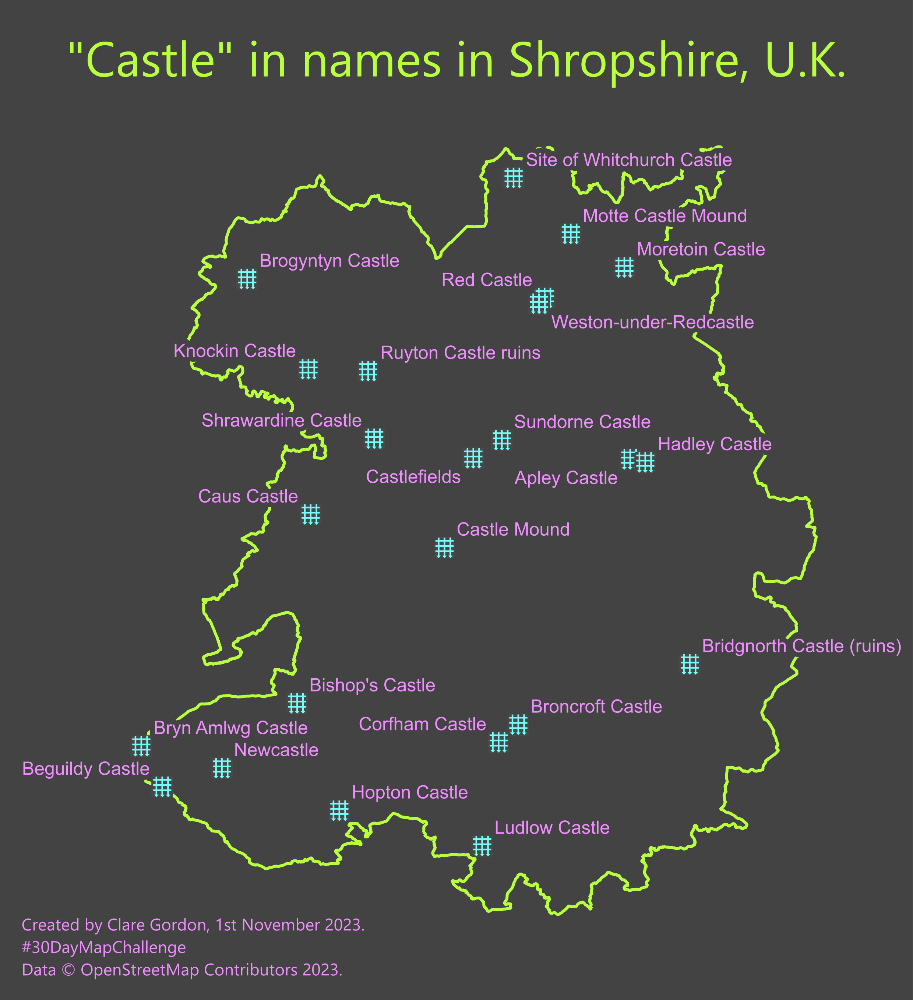

Points 2
Castle names of Shropshire
1st November 2023

Not the prettiest map I’ve ever made, but I wanted to see how many names contained “castle” in Shropshire.
Posted for #30DayMapChallenge - Day one on Mastodon.social.
Data
- Points for extent of Shropshire downloaded from OpenStreetMap via QuickOSM plugin in QGIS.
What did I learn?
- A couple of ways to use SQL queries to select data in QGIS - Database manager and
Execute SQL... in the Browser panel.
What would I do differently or want to find out?
- In the SQL queries I couldn’t get queries involving
ST_CONTAINS or ST_WITHIN to work. I need to investigate this further.
Process
Data
- Downloaded only points for place, historic and building tags using QuickOSM with Shropshire boundary as extent.
Preparing data
- Reprojected OSM layers to British National Grid (epsg:27700) and saved to GeoPackage.
- Right-click on GeoPackage in QGIS Browser panel and then
Execute SQL....
- Used SQL statement below:
SELECT p.*
FROM boundary b, place p
WHERE p.name like '%castle%'
- repeated for building and historic point data.
- Also tried statement below, to retrieve only points within the Shropshire boundary, but couldn’t work out how to get it to work.
SELECT p.*
FROM boundary b, place p
WHERE p.name like '%castle%'
AND ST_CONTAINS(b.geom,p.geom)
No errors, but no entries in result. Also tried ST_WITHIN, which had same result.
- Added all results to map as temporary layers.
- Merged result outputs to a final layer within the GeoPackage.
- Used QGIS
Extract by Location to extract only those places within the border of Shropshire.
- Added to map, and styled and labelled in rather ugly colours!
- Set up layout and exported as image.